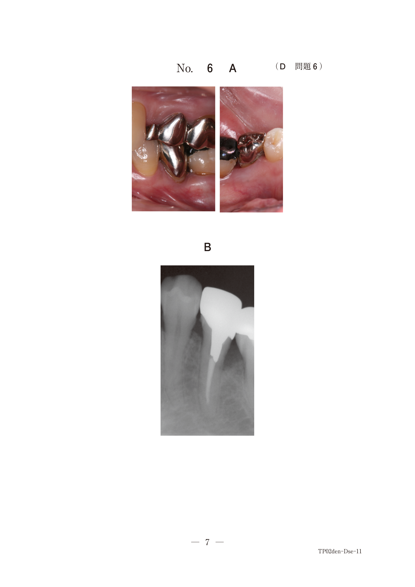
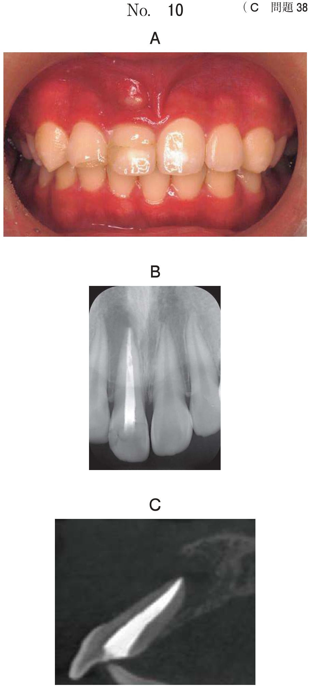

上皮性悪性腫瘍：術後対応
- 舌接触補助床（PAP）の適応と目的が最頻出（6問中3問）
- 各補綴装置と治療対象の正しい組合せを問う出題パターン
- 術後の機能障害（嚥下・構音・鼻咽腔閉鎖）の理解
術後の機能障害
上顎切除後
上顎骨・歯槽骨・硬口蓋の切除により口腔と鼻腔・副鼻腔が交通する。その結果、食品や液体が口腔から鼻腔へ流入し、咀嚼・嚥下障害と開鼻声（構音障害）を生じる。
- 欠損が正中を超えると咀嚼能力が著しく低下
- 軟口蓋への侵襲 → 鼻咽腔閉鎖不全
下顎・舌・口腔底切除後
舌の可動性低下により食塊の口腔移送障害（嚥下障害の主因）と構音障害を生じる。舌切除範囲が大きいほど障害は重度となる。
- 舌の可動性低下 → 食塊形成・移送の障害 → 低栄養の原因
- 口腔感覚障害 → 食塊の認識低下 → 嚥下障害を助長
- 下顎骨の区域切除 → 咬合偏位・下顎運動障害
術後に用いる補綴装置
装置と治療対象の対応
| 装置 | 略称 | 治療対象 |
|---|---|---|
| 舌接触補助床 | PAP | 摂食嚥下障害・構音障害（舌切除後） |
| 軟口蓋挙上装置 | PLP | 鼻咽腔閉鎖不全（軟口蓋麻痺・脳梗塞後など） |
| 顎義歯（栓塞子付き） | obturator | 上顎切除後の口腔・鼻腔交通の遮断 |
| 術後即時顎補綴装置 | ISO | 上顎腫瘍切除直後の補綴（術前印象→術直後装着） |
| 鼻咽腔部補綴装置 | ― | 鼻咽腔閉鎖不全（バルブ型・PLP型・栓塞子型） |
舌接触補助床（PAP）
上顎に装着する床タイプの補綴装置。口蓋部を厚くすることで、可動性の低下した舌が口蓋に接触しやすくなり、嚥下・構音機能を補償する。
- PAP上に咬合支持を設定し、嚥下時の下顎位を固定
- 言語聴覚士と連携し構音機能を聴覚的に評価しながら製作
- 舌の可動性が向上した段階で撤去またはPAP付き義歯へ移行
- 舌運動訓練を併用し、嚥下機能のリハビリテーションを行う
軟口蓋挙上装置（PLP）
軟口蓋の挙上運動が不十分で鼻咽腔閉鎖不全を生じた症例に適用する。義歯の後方に軟口蓋を挙上するための装置を付与する。
- 適応：脳梗塞後の軟口蓋麻痺、神経麻痺による軟口蓋の運動障害
- 軟口蓋の欠損には使えない（挙上する軟口蓋自体が必要）
術後即時顎補綴装置（ISO）
上顎腫瘍切除の術前に印象採得し、術直後に装着する。術後早期の咀嚼・嚥下・構音機能の回復を図る。その後、暫間顎義歯→最終顎義歯へと段階的に移行する。
リハビリテーションの流れ
下顎・舌切除後のアプローチ：
- 嚥下障害あり → PAP装着 → 舌の可動性向上 → PAP撤去 or 継続
- 嚥下障害なし → 義歯製作へ
上顎切除後のアプローチ：
- 術前印象 → ISO装着（術直後）→ 暫間顎義歯（術後早期）→ 最終顎義歯（術後1年〜）
過去問
舌癌患者に対し舌全摘と腹直筋皮弁移植術を施行した。術後、構音と嚥下機能の改善を目的としてある装置を製作した。装置装着前後の口腔内写真（別冊No.2)を別に示す。
矢印で示すのはどれか。1つ選べ。

b 舌接触補助床
c 軟口蓋挙上装置
d 下顎前方牽引装置
e オクルーザルランプ
【解説】舌全摘後に構音・嚥下の改善目的で製作する装置はPAP（舌接触補助床）。上顎の口蓋部を厚くし、可動性の低下した舌が口蓋に接触しやすくする。顎義歯は上顎切除後の口腔・鼻腔交通の遮断に用いるもので、舌切除後には適さない。
68歳の男性。舌癌によって舌の亜全摘を行い組織再建後に口腔外科から紹介されて来院した。治療のために製作した装置の写真（別冊No.11A）と装置装着時の口腔内写真（別冊No.11B）を別に示す。
この装置の目的はどれか。1つ選べ。


b 軟口蓋の挙上
c 残存歯の固定
d 咬合接触の是正
e 舌運動機能の補償
【解説】舌の亜全摘後にPAPを製作した症例。PAPの目的は舌運動機能の補償であり、口蓋部を厚くすることで嚥下・構音機能を改善する。「軟口蓋の挙上」はPLPの目的であり混同注意。
口腔内装置と治療対象の組合せで適切なのはどれか。1つ選べ。
問41〜60
b 舌接触補助床 ーーーーーーーーーーーー 摂食嚥下障害
c ナイトガード ーーーーーーーーーーーー 睡眠障害
d 軟口蓋挙上装置 ーーーーーーーーーーー 顎関節症
e スタビライゼーションスプリント ーーー 構音障害
【解説】各装置の正しい対応：舌接触補助床（PAP）→ 摂食嚥下障害。他の誤り選択肢の正しい組合せは、保定装置 → 矯正後の後戻り防止、ナイトガード → ブラキシズム、軟口蓋挙上装置 → 鼻咽腔閉鎖不全、スタビライゼーションスプリント → 顎関節症。
上顎腫瘍切除後、左側口蓋部の広範欠損を有する患者の口腔内写真（別冊No. 20A）、ある装置の粘膜面観の写真（別冊No.20B）及び装置装着後の口腔内写真（別冊No.20C）を別に示す。
この装置により改善されるのはどれか。3つ選べ。

b 構 音
c 開口量
d 鼻咽腔閉鎖
e 開閉口運動路
【解説】上顎切除後の広範欠損に顎義歯（栓塞子付き）を装着した症例。顎義歯により口腔と鼻腔の交通が遮断され、嚥下・構音・鼻咽腔閉鎖が改善される。開口量や開閉口運動路は顎関節や咀嚼筋に関するもので、顎義歯では改善されない。
上顎腫瘍切除前後の口腔内写真（別冊No.14）を別に示す。
リハビリテーションに用いるのはどれか。1つ選べ。

b 上顎部分床義歯
c 軟口蓋挙上装置
d パラタルランプ
e 術後即時顎補綴装置〈ISO〉
【解説】上顎腫瘍切除の前後の写真が示されており、切除直後のリハビリテーションに用いるのは術後即時顎補綴装置（ISO）。術前に印象採得し、術直後に装着する。舌接触補助床は舌切除後、軟口蓋挙上装置は軟口蓋麻痺に用いる。
78歳の男性。舌癌の診断で舌切除術、頸部郭清術および再建術を行った。術後の口腔内写真（別冊No.41）を別に示す。
術後低栄養の原因となるのはどれか。2つ選べ。

b 唾液分泌過多
c 口腔感覚障害
d 鼻咽腔閉鎖不全
e 食塊の口腔移送障害
【解説】舌切除後の低栄養の原因を問う問題。舌切除により舌の可動性が低下し、食塊の口腔移送障害を生じる。また口腔感覚障害により食塊の認識が低下し、嚥下障害を助長する。構音障害は発話の問題であり栄養には直接影響しない。鼻咽腔閉鎖不全は軟口蓋の問題で、舌切除とは異なる。